Para quien no puede comer de todo
“Soy intolerante severa a la lactosa y también al gluten (…) se agradece encontrar productos buenos con las restricciones que tengo.”
Leer la reseña completa →Pintor Gustavo Cabello Olguín 780 · Rancagua
Pastelería sin gluten, sin azúcar, sin lactosa y vegana, hecha para que nadie se quede mirando la vitrina. Con café en grano.
Lunes a miércoles desde las 14:30 · jueves y viernes desde las 09:30
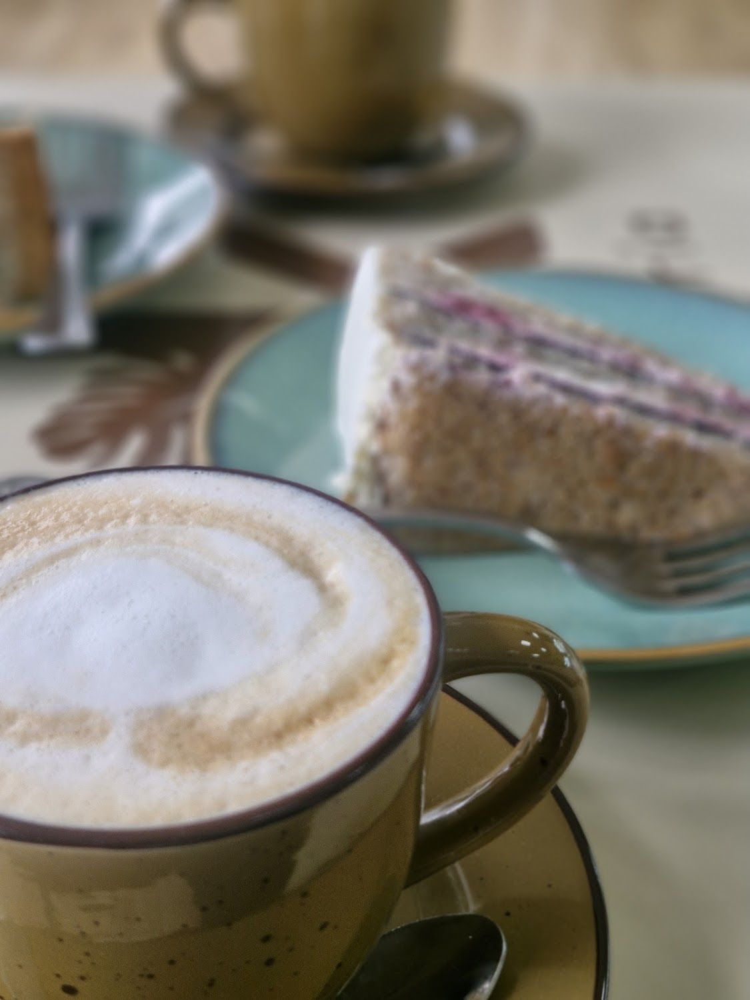
“Soy intolerante severa a la lactosa y también al gluten (…) se agradece encontrar productos buenos con las restricciones que tengo.”
Leer la reseña completa →Maracuyá, puro chocolate, tiramisú, cheesecake, milhojas. La vitrina va cambiando y las tortas grandes se agendan.
Ver la carta →Sándwiches y pan sin gluten — “grande, fuerte y con un buen precio”, según una clienta que vino desde Valparaíso.
Conocer el local →Nosotros
Es la palabra que usan ellos mismos en su Instagram: “¿Tienes alguna restricción? ¡Este es tu lugar!”
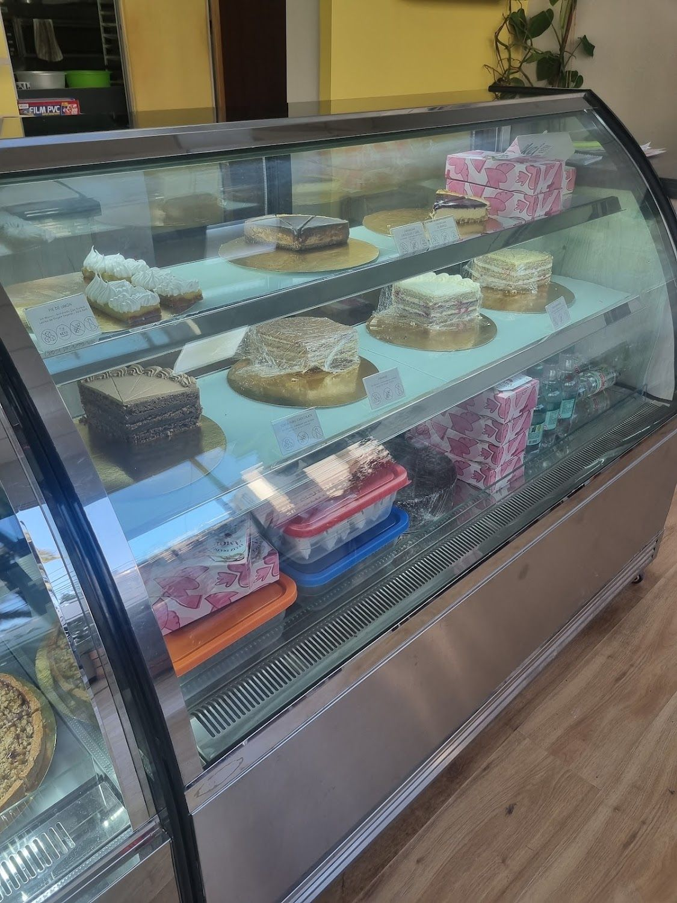
La gracia de Kei no es tener “una opción sin gluten”: es que todo lo de la vitrina lo es. Y hay además alternativas sin azúcar, sin lactosa y veganas.
“La mejor panadería sin gluten que he conocido. Es muy lindo tener opciones que no son dulces, y todo es muy delicioso. (…) Lo único problema es que vivo en Valparaíso 😓 espero volver” Tessa Forde, en Google
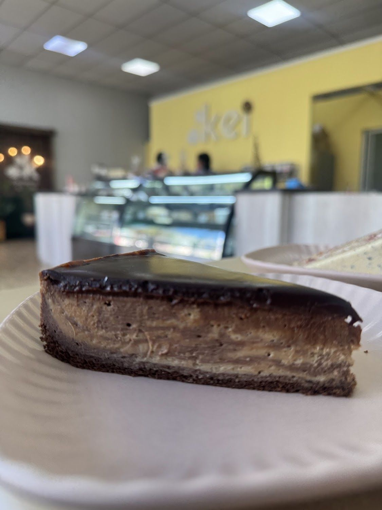
Paredes amarillas, mesas de madera y platos de cerámica verde menta. Una reseña suma dos datos que no están en ninguna otra parte: el local es climatizado y tiene estacionamiento.
Y otra lo resume así: “El ambiente es lo mejor, tranquilo, ideal para conversar y el servicio, amable y cercano.”
Cómo llegar →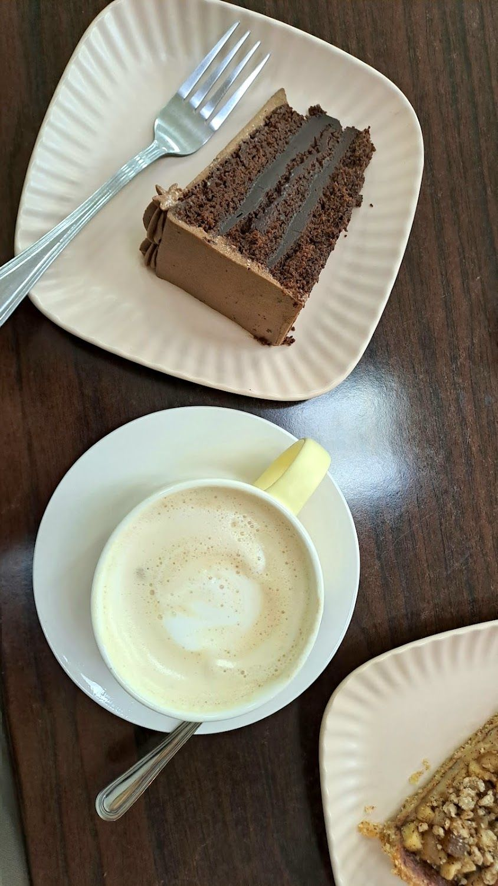
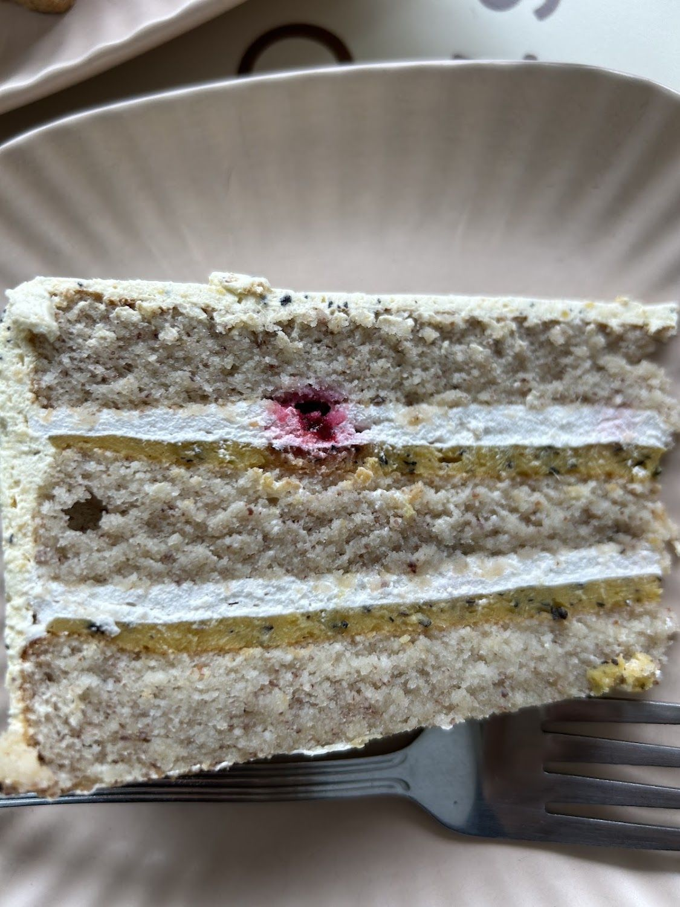
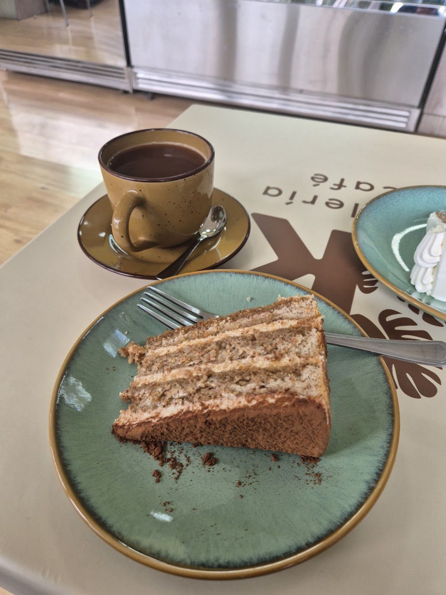
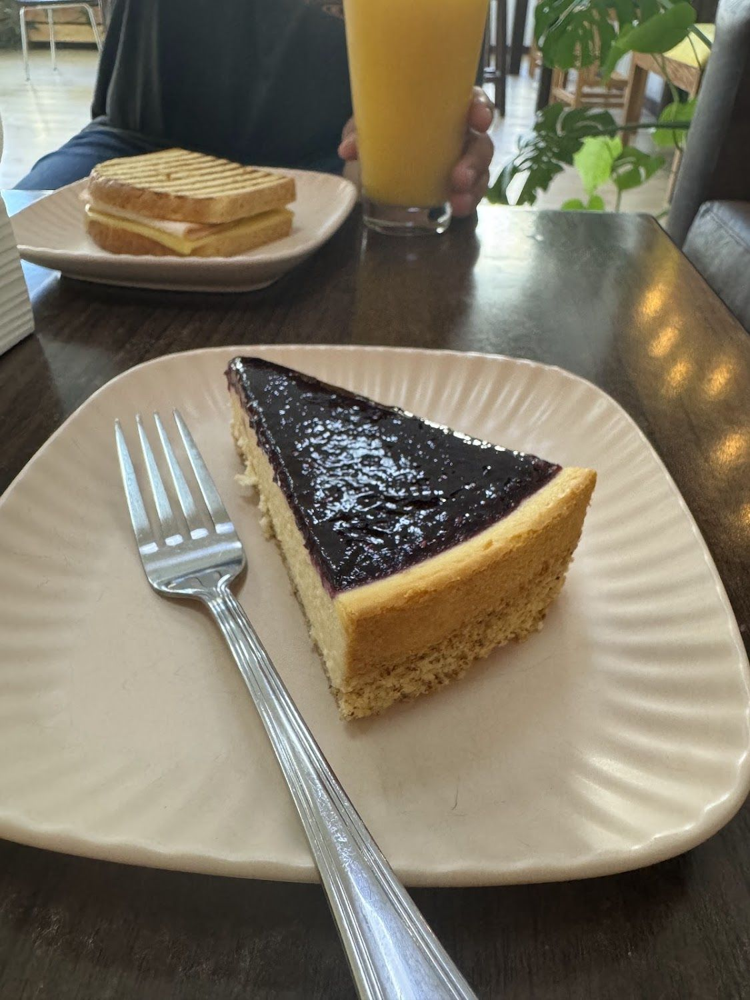
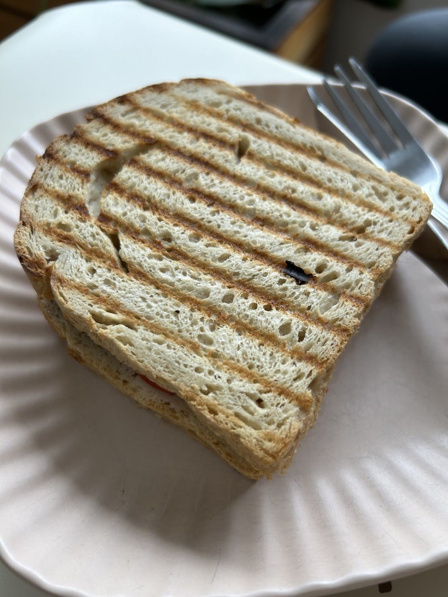
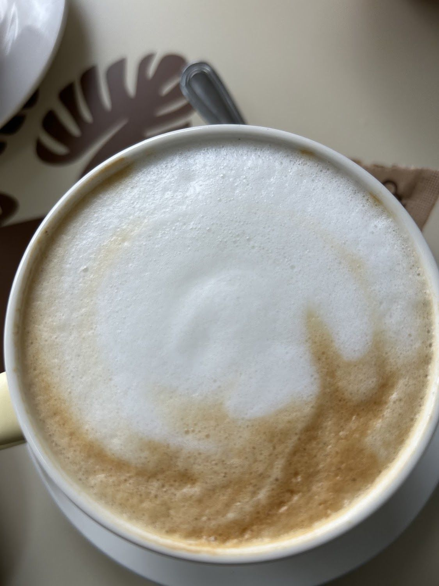
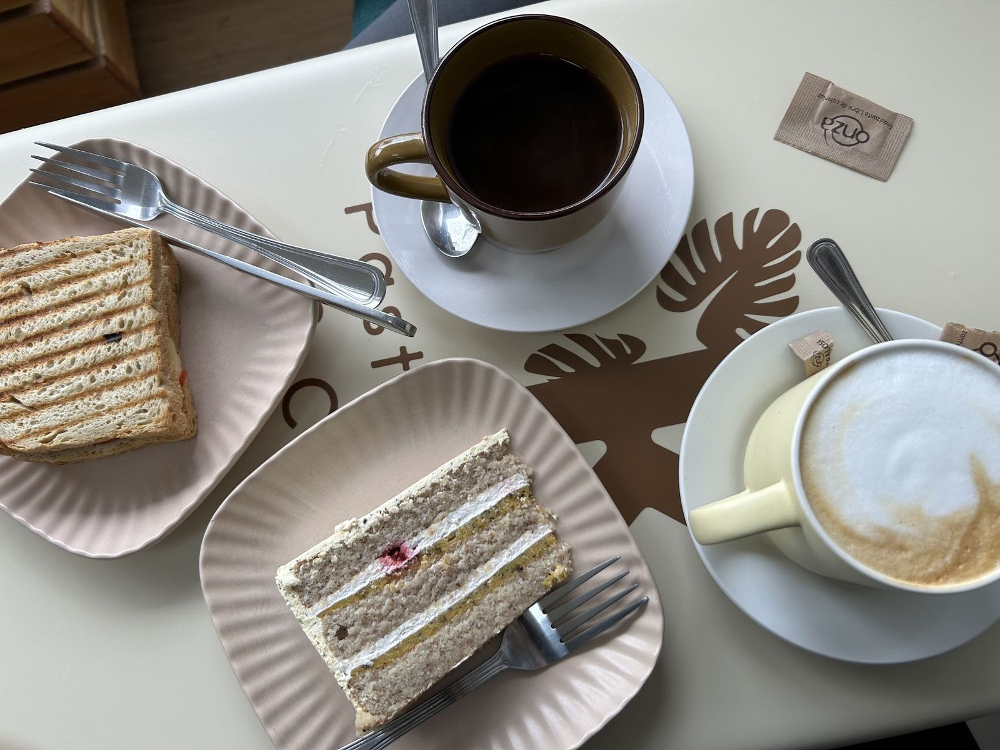
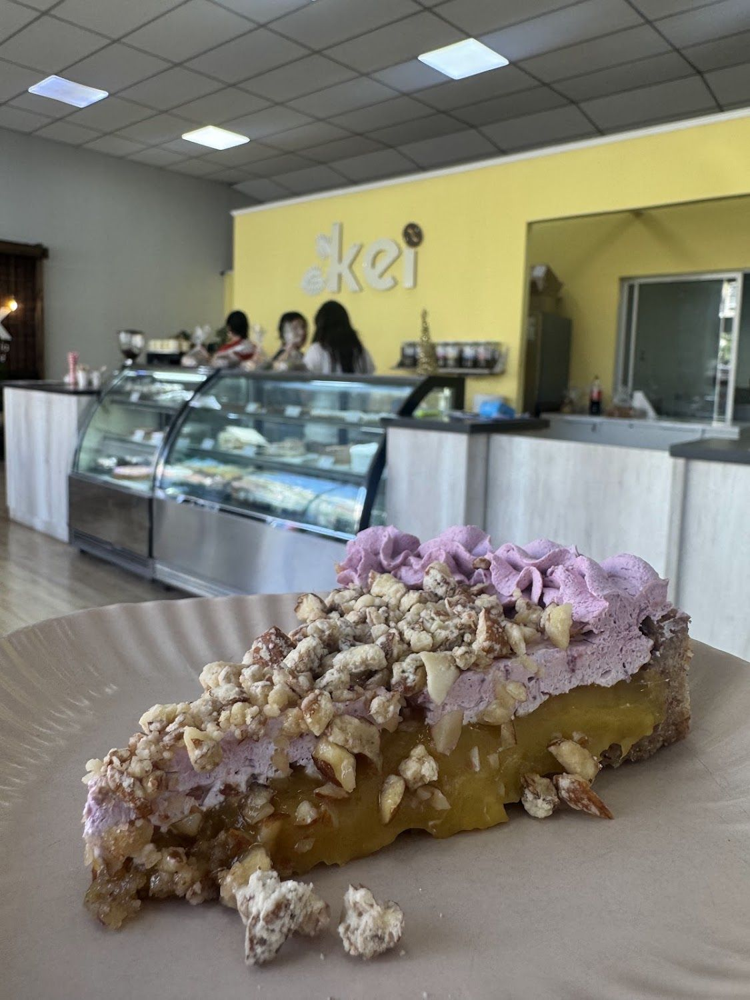
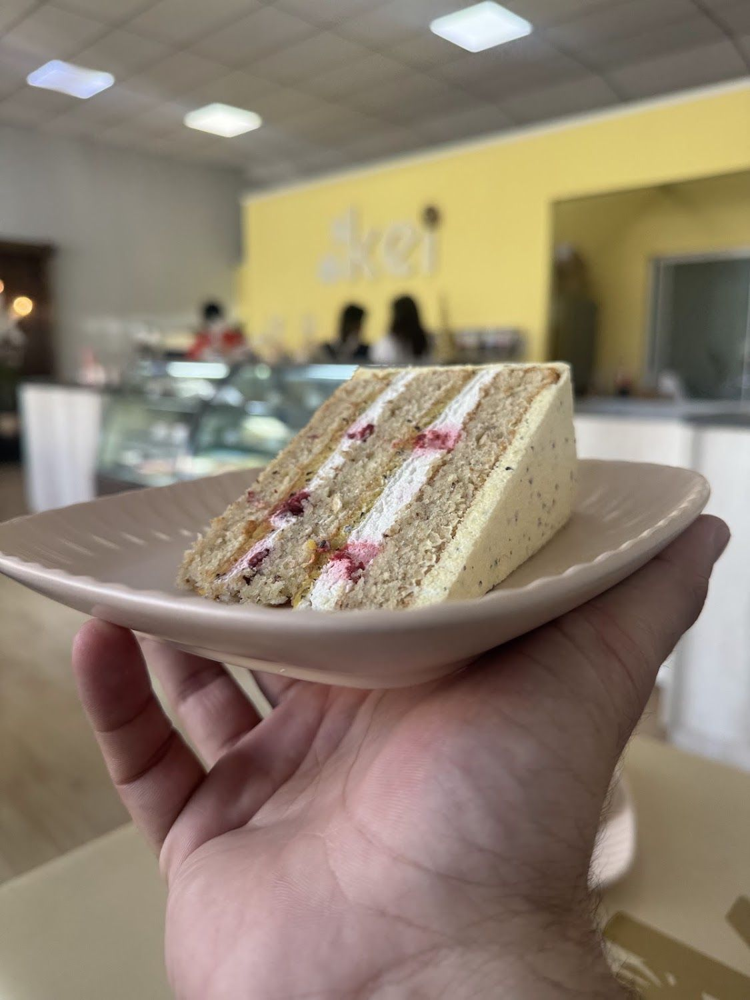
Todas las fotos son del propio local, de su ficha de Google Maps.
Carta
Todo sin gluten. Las opciones sin azúcar, sin lactosa y veganas cambian según el día.
Productos confirmados en su ficha de Google, sus fotos y sus reseñas.
Reseñas
Reales, copiadas tal cual de su ficha de Google Maps.
★★★★★
Soy intolerante severa a la lactosa y también al gluten, compré porciones de tortas y estaban muy ricas, tienen opciones veganas y sin lactosa. Se agradece encontrar productos buenos con las restricciones que tengo, muchas gracias 😍💯
★★★★★
La mejor panadería sin gluten que he conocido. Es muy lindo tener opciones que no son dulces, y todo es muy delicioso. El pan es grande, fuerte y con un buen precio. Lo único problema es que vivo en Valparaíso 😓 espero volver
★★★★★
Es una de las mejores pastelerías de Rancagua!! La mejor de la región en cuento a ser cero azúcar y cero gluten! Recomiendo mucho la torta puro chocolate, es EXQUISITA!!
Redes
Sólo lo verificado. Ningún perfil inventado.
Visítanos
C. Pintor Gustavo Cabello Olguín 780
Rancagua, Región de O'Higgins
Plus Code V756+VC · con estacionamiento
Lunes a miércoles desde las 14:30
Horario de su ficha de Google Maps, 15-09-2026.
Servicios declarados en su ficha de Google. Las tortas grandes se encargan con anticipación.